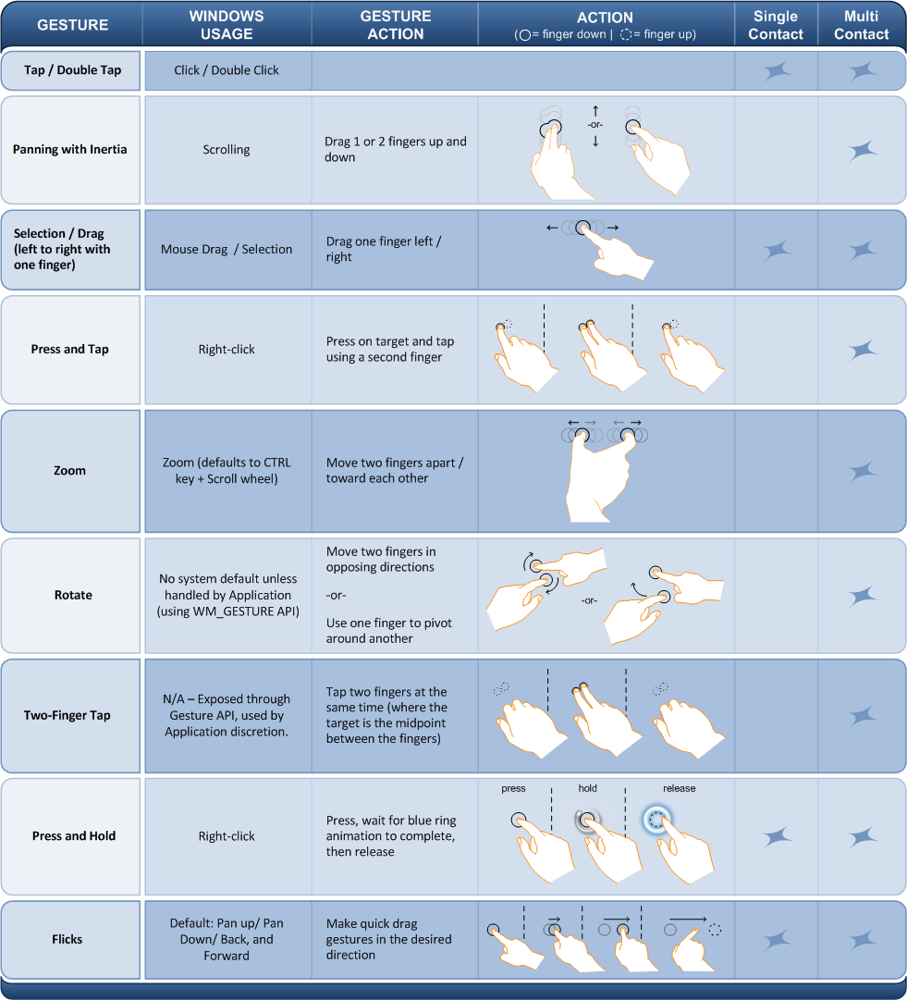

title: Windows Touch Gestures Overview description: This section describes the various gestures supported by Windows Touch. ms.assetid: b2fa11a7-9abb-4149-96e3-e8c663c29d4a keywords:
This section describes the various gestures supported by Windows Touch.
Windows Touch enables several gestures that support single and multiple contacts. The following image illustrates the various gestures that are supported in Windows 7.

[!Note]
Some recognizers are more reliable at interpreting gestures with multiple contacts when the contacts are further apart from each other.
For legacy support, the default gesture handler maps some gestures to Windows messages that were used in previous versions of Windows. The following table outlines how gestures map to legacy messages.
| Gesture | Description | Message(s) Generated |
|---|---|---|
| Pan | The pan gesture maps to using the scroll wheel. | WM_VSCROLL WM_HSCROLL |
| Press and Hold | The press and hold gesture maps to right clicking the mouse. | WM_RBUTTONDOWN WM_RBUTTONUP |
| Zoom | The zoom gesture triggers messages that are similar to holding the CTRL key, and spinning the mouse wheel to scroll. | WM_MOUSEWHEEL with MK_CONTROL set in the wParam |
Windows Touch gestures can be interpreted by application developers by handling the WM_GESTURE message from the WndProc function of an application. After handling this message, you can retrieve a GESTUREINFO structure which describes the gesture. The GESTUREINFO structure will have assorted information that depends on the type of gesture.
The GESTUREINFO structure is retrieved by passing the handle to the gesture information structure to the GetGestureInfo function.
The following flags indicate the various states of the gestures and are stored in dwFlags.
| Name | Value | Description |
|---|---|---|
| GF_BEGIN | 0x00000001 | A gesture is starting. |
| GF_INERTIA | 0x00000002 | A gesture has triggered inertia. |
| GF_END | 0x00000004 | A gesture has finished. |
[!Note]
Most applications should ignore the GID_BEGIN and GID_END and pass them to DefWindowProc. These messages are used by the default gesture handler. Application behavior is undefined when the GID_BEGIN and GID_END messages are consumed by a third-party application.
The following table indicates the various identifiers for gestures.
| Name | Value | Description |
|---|---|---|
| GID_BEGIN | 1 | A gesture is starting. |
| GID_END | 2 | A gesture is ending. |
| GID_ZOOM | 3 | The zoom gesture. |
| GID_PAN | 4 | The pan gesture. |
| GID_ROTATE | 5 | The rotation gesture. |
| GID_TWOFINGERTAP | 6 | The two-finger tap gesture. |
| GID_PRESSANDTAP | 7 | The press and tap gesture. |
[!Note]
The GID_PAN gesture has built-in inertia. At the end of a pan gesture, additional pan gesture messages are created by the operating system.
The GESTUREINFO structure members ptsLocation and ullArguments specify a point (using the POINTS structure) and additional information about gestures depending on the gesture. The following table lists the values associated with each type of gesture.
| Gesture ID | ullArguments | ptsLocation |
|---|---|---|
| GID_ZOOM | Indicates the distance between the two points. | Indicates the center of the zoom. |
| GID_PAN | Indicates the distance between the two points. | Indicates the current position of the pan. |
| GID_ROTATE | Indicates the angle of rotation if If the GF_BEGIN flag is set. Otherwise, this is the angle change since the rotation has started. This is signed to indicate the direction of the rotation. Use the GID_ROTATE_ANGLE_FROM_ARGUMENT and GID_ROTATE_ANGLE_TO_ARGUMENT macros to get and set the angle value. | This indicates the center of the rotation which is the stationary point that the target object is rotated around. |
| GID_TWOFINGERTAP | Indicates the distance between the two fingers. | Indicates the center of the two fingers. |
| GID_PRESSANDTAP | Indicates the delta between the first finger and the second finger. This value is stored in a POINT structure in the lower 32 bits of the ullArguments member. | Indicates the position that the first finger comes down on. |